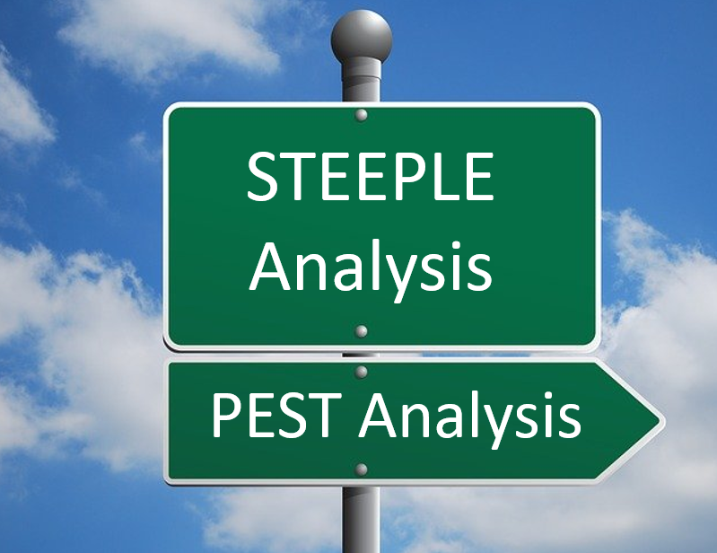
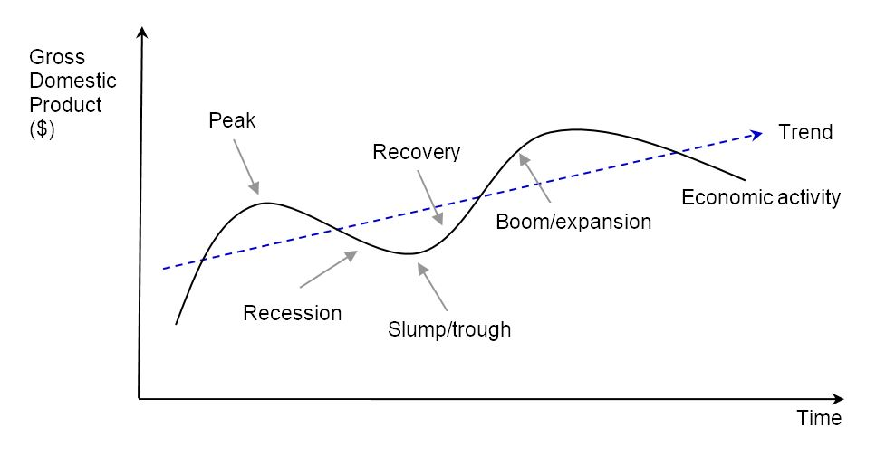
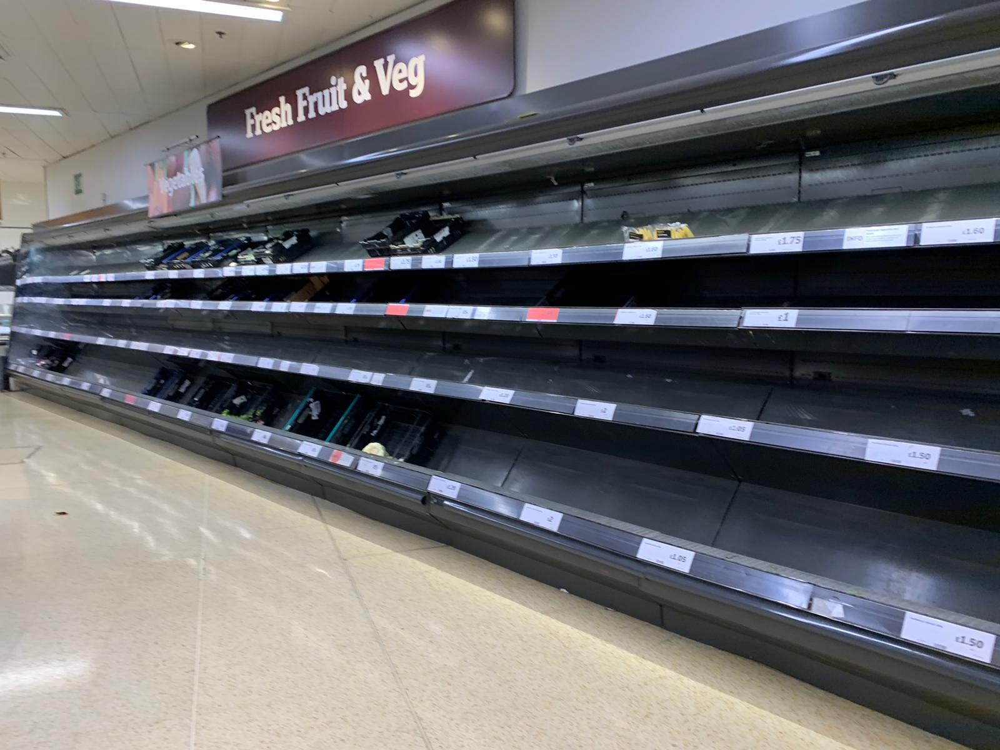
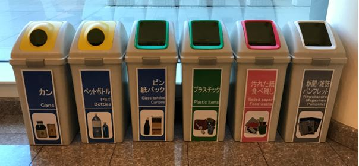
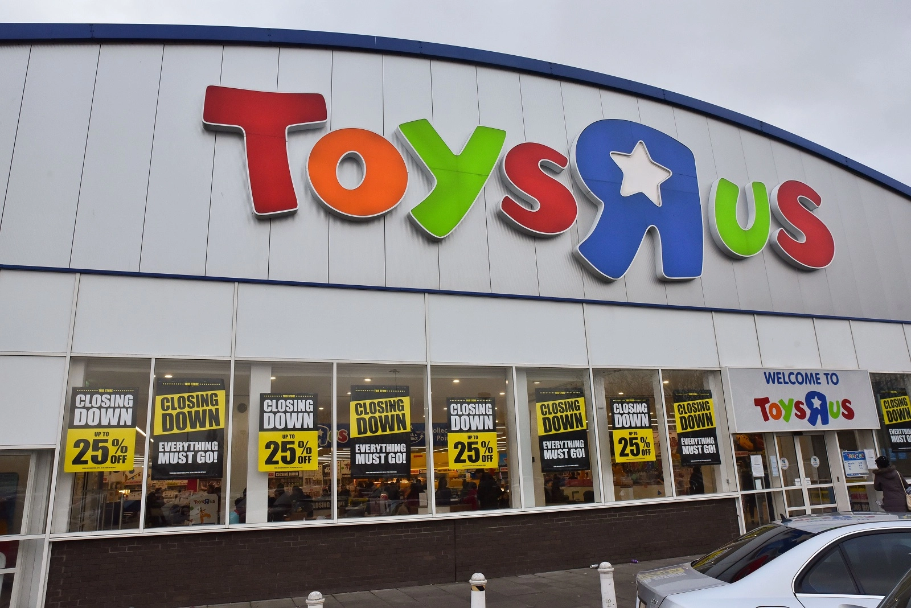
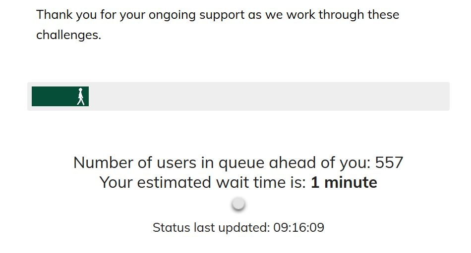
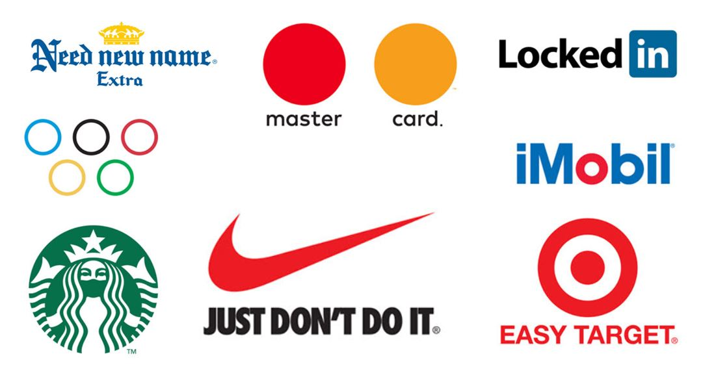

IB Docs (2) Team
IB Docs (2) Team

BMT 3 - STEEPLE analysis

“The reasonable man adapts himself to the world; the unreasonable one persists in trying to adapt the world to himself.”
- George Bernard Shaw (1856 -1950), Irish author and awardee of the Nobel Prize in Literature (1925)
This section of the IB Business Management syllabus examines the (positive and negative) consequences of a change in any of the STEEPLE factors for a business’s objectives and its corporate strategy.
A STEEPLE analysis is a Business Management situational and planning tool used to study the factors in the external business environment that impact on its operations. STEEPLE comprises of seven categories of factors that affect business operations and decision making. STEEPLE stands for:
Social
Technological
Economic
Ethical
Political
Legal
Environmental
The focus of this BMT is to allow managers to brainstorm the external business environment and its impacts on the organization. External threats and opportunities either restrict or aid the performance of a business but are beyond its control. The external business environment refers to the factors that are beyond the control of an individual organization, i.e. the external environment affects all businesses in the economy.
Businesses need to consider the external environment in which they operate, in order to make the most effective decisions by minimizing threats and making the most of opportunities. However, most businesses are unlikely to have much, if any, control over the external business environment - just look at what happened during the coronavirus pandemic as an example.
Therefore, businesses need to continually monitor their the market in which they operate and how the external environment can affect their operations and profits. Planning ahead will help them to react more appropriately and effectively to any changes in the STEEPLE factors that might occur. The most competitive businesses are those that anticipate change, rather than react to it.
Changes in any of the STEEPLE factors can have positive or negative impacts on businesses. Successful organizations are the ones that can adapt to changes in the external business environment.
Watch this introductory video about PESTLE (a variation of STEEPLE) analysis here, and answer the questions that follow:
Questions
What does a PESTLE analysis focus on, rather than the business itself or its immediate surroundings?
PESTLE is an acronym for Political, Economic, Social, Technological, Legal and ... ?
What are the first two steps of a PESTLE analysis?
Inflation and unemployment are examples of which PESTLE factor?
What is the environmental factor used in the example of a PESTLE analysis for a coffee shop?
Answers
Note: timings have been included here for illustrative purposes only.
1. What does a PESTLE analysis focus on, rather than the business itself or its immediate surroundings? 0:26
The macro (external) environment in which the organization operates
2. PESTLE is an acronym for Political, Economic, Social, Technological, Legal and ... ? 1:06
Environmental
3. What are the first two steps of a PESTLE analysis? 1:41
(i) Identifying external trends, and (ii) determining implications and decide actions
4. Inflation and unemployment are examples of which PESTLE factor? 2:10
Economic
5. What is the environmental factor used in the example of a PESTLE analysis for a coffee shop? 3:21
Climate change
Economic factors in a STEEPLE analysis refer to the determinants of an economy's performance. Changes in economic factors that affect the external business environment can be explained by the business cycle (also known as the trade cycle). The level of economic activity is measured by gross domestic product (GDP) in an economy. GDP measures the total value of national output, per time period (usually one year).

The business cycle (also called the trade cycle) shows the level of economic activity, over time
The different phases in the business cycle include:
Boom (expansion) – when spending, employment and prices rise due to an increase in economic activity in the economy.
Peak – a high point in the business cycle, before a recession sets in as booms are not sustainable in the long run; prices are high, thus causing a fall in the economy’s competitiveness.
Recession – a decline in economic activity, leading to lower employment and falling business and consumer confidence levels.
Slump (or trough) – the bottom/lowest point in the business cycle, with mass-scale unemployment and falling prices; government intervention is likely to occur to rectify the situation. As Harry S Truman (the 33rd President of the United States, 1884-1972) said, “It’s a recession when your neighbour loses his job; it’s a depression when you lose yours.”
Recovery – when economic activity and employment start to rise following a slump.
Interrelated factors that cause fluctuations in the level of economic activity* in an economy include changes in:
The level of consumer and business confidence – improved confidence levels will have a positive impact on economic activity in the economy.
Costs of production – higher costs will typically cause prices to increase. This is likely to deteriorate the economy’s international competitiveness and level of economic activity.
The exchange rate – a currency appreciation means that export prices rise relative to import prices. This will tend to reduce the international competitiveness of the economy as exporters will generally find it more difficult to sell their products due to the higher prices.
Exports are the goods and/or services produced in one country and sold to customers located in other countries.
By contrast, imports are the goods and services produced overseas but purchased by domestic customers.The interest rate – higher interest rates make borrowing more expensive for households, so they tend to spend less. In addition, higher interest rates reduce the incentive to invest in the economy due to the higher costs of borrowing money. Hence, higher interest rates tend to constrain economic activity.
The inflation rate – the higher the inflation rate, the higher prices are in general. Hence, higher rates of inflation in the economy tend to reduce its international competitiveness, thereby reducing the level of economic activity.
* Read more about economic growth by clicking the icon here.
Economic growth
Economic growth refers to an increase in the level of economic activity over time, as illustrated in a business cycle diagram. It can be achieved by enhancing the quality of factors of production, which normally requires an investment in any combination of the following:
Capital goods - the greater the level of investment, the higher economic growth tends to be in the long run, e.g. developing an economy’s infrastructure to aid economic activity and competitiveness.
Education and training - a better educated and trained workforce becomes a more productive and internationally competitive labour force.
Health technology - advances in health care help to ensure workers are healthy and therefore more productive. It can also prevent workers having to take time off work or retire early due to illness.
Economists also attribute economic growth to an increase in the quantity of resources. For example, discovering new sources of raw materials will increase the productive capacity of an economy. For example, changes in the size of the labour force can be caused by a number of factors:
Changes in demography. A fall in the birth rate in high-income countries has led to an ageing population and a smaller workforce. If people choose to start work later (due to university commitments) and retire earlier (due to rising incomes), this will also reduce the size of the workforce. Conversely, a ‘baby boom’ will lead to a larger workforce in the next couple of decades.
Changes in labour participation rates. The labour participation rate measures the number of people who are employed or self employed as a percentage of the total labour force. Government policies (such as lower rates of income tax or reduced social welfare payments) can boost the participation rate. A rising number of women returning to or starting work has also led to higher participation rates in many regions of the world.
Changes in net migration. This refers to the difference between immigration (the number of people entering a country for work purposes) and emigration (those leaving the country). If the net migration figure is positive, then the size of the workforce will increase, thereby helping to raise the productive capacity of the economy.
The demand for imports and exports is affected by exchange rates
Case Study 1 - LVMH delays takeover of Tiffany & Co.
In November 2019, the French luxury goods conglomerate LVMH announced it would be acquiring Tiffany & Co. for $16.2 billion. However, the COVID-19 pandemic that caused a huge global recession changed the terms of the deal in 2020 as business confidence plummeted. LVMH had requested a delay to the deal until January 2021 (at the very earliest).
In October 2020, a spokesperson for Tiffany & Co. commented “We are very pleased to have reached an agreement with LVMH at an attractive price and to now be able to proceed with the acquisition. The Board concluded it was in the best interests of all of our stakeholders to achieve certainty of closing.”
Case Study 2 - Hyperinflation in Germany, Venezuela, Zimbabwe and Hungary
History has recorded some staggering rates of hyperinflation, leading to the collapse of the economy or even the currency. Examples include Weimer, Germany (1923) when prices soared so quickly that people used wheelbarrows to carry their cash!
More recently, in 2019, hyperinflation left Venezuela in a major economic crisis as average price levels exceeded 1.3 million per cent! However, this is still relatively low compared with Zimbabwe which recorded an inflation rate of an incomprehensible 231,000,000% in July 2008. This was caused by the government’s gross mismanagement of the economy between 2003 and 2009. Zimbabwe had fuelled inflation by printing banknotes with a denomination value of 100 trillion Zimbabwean dollars (ZWD100,000,000,000,000)! This meant the currency became literally worthless, so was eventually abandoned (and replaced with the US dollar).
However, the largest denomination banknote ever officially issued for circulation was in 1946 by the Hungarian National Bank for 100 quintillion pengő (100,000,000,000,000,000,000, or 1020; or “100 million trillion”). In July 1946, Hungary’s daily inflation hit a world record rate of 207%. This meant that prices doubled every 15 hours! Today, Hungary’s highest denomination banknote is a modest 20,000 forint (the currency that replaced the pengo). As a member of the European Union (EU) since May 2004, the long-term goal of the Hungarian government is to replace the forint with the euro.
Case Study 3 - China's economic growth
China’s phenomenal economic growth in the past four decades has seen the country overtake the USA in many industries, both as a consumer and producer. Shenzhen was officially named as China's first Special Economic Zone, back in 1980. This entails special tax concessions to the region to attract domestic and foreign direct investment. Shenzhen's GDP per capita increased from RMB600 (USD87) in 1979 to over RMB200,000 (US$29,045) in 2020. This is an increase of 33,233%, or an annualised rate of 810%(!) The city's GDP per capita exceeded that of Hong Kong's in 2018.
In 2009, China became the world’s largest market for car manufacturers. This has huge impacts for the operations of global car makers, such as production and marketing. China has also had more cars on its roads than the USA since 2006!
China has enjoyed high rates of growth for the past 35 years
Case Study 4 - China slaps 212% tariffs on Australian wines
The wine wars between China and Australia intensified at the end of 2020, when China imposed tariffs (import taxes) of up to 212% on Australian wine. Australian wine exporters said there is “no way that we can compete at those levels” and an estimated 800 wine manufacturers that were established to specifically export to China need another strategy to survive, especially as China accounts for around 39% of Australia's total wine exports.
A tariff refers to an import tax placed on certain goods coming into the country from overseas. As a form of trade restriction, it raises the price of the imported product, thereby making this less attractive and giving domestic producers a relative competitive advantage.
Source: adapted from BBC News
ATL Activity 1 (Thinking skills) - Calculating exchange rates
Question 1
Taryn Corporation, based in the UK, is considering the purchase of a property in the United States for $13,280,000. Calculate the change in the price for Taryn Corporation if the US dollar falls in value from £1 = $1.45 to £1 = $1.55, and comment on your answer.
Answers
- At £1 = $1.45, Taryn Corporation would pay $13,280,000 ÷ $1.45 = £9,158,620.69
- At £1 = $1.55, Taryn Corporation would pay $13,280,000 ÷ $1.45 = £8,567,741.94
- Hence, Taryn Corporation benefits from the stronger pound sterling (as it can buy American imports at a lower price), saving £590,878.75 for the property in the USA.
Question 2
Calculate the price in USD for American tourists visiting France who wish to purchase Louis Vuitton handbags priced at €3,000 (euros), when the exchange rate is $1 = €0.764.
- At the exchange rate of $1 = €0.764, this means €1 = $1.30
- Hence, the American tourists would need to pay €3,000 ÷ $3,926.70 (accept answers that show $3,927)
Question 3
In the previous example, explain what would happen if the exchange rate changed from $1 = €0.764 to $1 = €0.633.
- This means the USD has fallen in value as each dollar is now worth less units of euros. Hence, American tourists would need to spend more money to purchase the Louis Vuitton handbags.
- At $1 = €0.633, this means the tourists need to pay €3,000/€0.633 = $4,739.37 (accept answers that show $4,740 or $4,739
ATL Activity 2 (Research skills) - Exchange rates quiz
Identify the country that uses the following currencies:
Afghani | Baht Thailand | Dồng Vietnam | Yen Japan | Kyat Myanmar |
Won South Korea | Kip Laos | Ringgit Malaysia | Zloty Poland | Rand South Africa |
Kwanza Angola | Florin Aruba | Hryvnia Ukraine | Ariary Madagascar | Pataca Macau |
Birr Ethiopia | Lek Albania | Taka Bangladesh | Boliviano Bolivia(!) | Colón Costa Rica |
ATL Activity 3 (Research skills) - Job losses caused by the worldwide coronavirus pandemic

The coronavirus outbreak of 2019 (and beyond) caused the world's deepest recession in living memory, with business closures and job losses in literally every industry in every country in the world. Use the Internet to investigate the impact of the coronavirus outbreak on jobs in a country of your choice.
Some examples include:
A historical high of more than 44 million people registered as unemployed in the USA, recorded in June 2020, about 12 weeks after the first national lockdown in an attempt to control the disease.
According to analysis from the New Economics Foundation (NEF), the coronavirus pandemic could cause up to 124,000 job losses in the UK aviation industry without direct government support.
Data from the Australian Bureau of Statistics (ABS) showed that Australia went into a recession for the first time in 3 decades. Retail spending in the country fell by $5.38 billion between March to April, causing unemployment across the economy. The coronavirus crisis was to blame.
Airbus cut 15,000 jobs, mainly in Germany and France due to the decline in demand for its planes as a result of the stagnant air travel industry. The European aircraft manufacturer had previously furloughed 3,200 workers due to a cash flow crisis. Read more about this story here, from the BBC.
Oil giant BP announcing 10,000 job cuts following the global slump in demand for oil (as people were stuck indoors during The Great Lockdown), around 15% of its global workforce.
British Airways announced in August 2020 that it would make around 10,000 employees redundant as the airline carrier struggled with a huge decline in flights to/from the UK.
In October 2020, Cathay Pacific (Hong Kong's flagship airline carrier) announced 6,000 job cuts globally along with closure of Cathay Dragon (formerly known as Dragonair) - its subsidiary airline. The company also announced that existing staff would need to take a pay cut - the more senior, the larger the pay cut.
Also in August 2020, Coca-Cola announced 4,000 job cuts in the USA, Canada and Puerto Rico due to declining sales caused by the coronavirus pandemic. The company said it may need to make job cuts in other countries at a later date. It estimates the severance expenses of the job losses could cost between $350 million to $550 million.
Dyson, famous for its bagless vacuum cleaner, announced in August 2020 that it would have to cut 600 jobs in the UK plus a further 300 jobs worldwide as the coronavirus harmed its global sales.
Frankie & Benny's (a bar and grill restaurant chain owned by the Wagamama group) closed 125 restaurants in the UK, causing 3,000 people to lose their jobs.
Rolls-Royce announced 9,000 job cuts around the world due to the global decline in air travel, hurting demand for its jet engines and maintenance services.
According to Business Insider India, more than half of all coronavirus-related business closures since March 2020 are now permanent. Read more about this here. Business Insider India also reported that nearly 16,000 restaurants have permanently closed since the pandemic started. Read more about this here.
ATL Activity 4 (Research skills) - Job creation during the global coronavirus pandemic
Camiko London was established in 2020 during the coronavirus outbreak
Between 2019 and 2020, the COVID-19 (coronavirus) pandemic threatened many businesses due to sharp declines in consumer spending (see ATL Activity 3). However, not every business suffered during the deepest recession the world experienced in living memory.
Investigate and list as many examples as possible of businesses that benefited from the opportunities presented by the coronavirus pandemic.
Encourage students to use both local and international examples, whenever appropriate to do so.
Possible responses could include:
E-commerce businesses with well-developed online retail stores, such as Amazon and Taobao
Entertainment streaming service providers, such as Netflix and Disney+
Food delivery firms, such as Deliveroo, Delivery.com, DoorDash, Grab, Grubhub, Just Eat, Meituan Waimai, OLO, Postmates, Snapfinger and UberEats
Logistics and courier companies, such as DHL, FedEx, TNT, UPS, and the post office.
Supermarkets (as more people ordered online and/or ate at home instead of dining at restaurants)
Personal protective equipment (PPE) manufacturers of products such as surgical masks, hand sanitizing products, disinfectants, medical gowns, and gloves. An example is Camiko London (see ATL Activity 4 above).
Video conferencing technology firms, such as Adobe Connect, Google, Skype and Zoom (for online meetings, conference and education). Zoom says it now has 300 million daily meeting participants - around 10 million more each day before the coronavirus hit.
Several large companies announced revenues and profits at the end of 2020, having been able to exploit opportunities from national lockdowns and more people staying at home / working from home during the pandemic. These companies include Netflix, Uber Eats and the Walt Disney Company.
Twenty years ago, Blockbuster refused a partnership proposal made by Netflix. Blockbuster went bankrupt in 2011. At the start of 2021, Netflix had more than 200 million paid subscribers. The company had sales revenues in excess of $25 billion in 2020 - the equivalent of more than $68.49 million per day or in excess of $2.85 million per hour(!)
Uber Eats (food delivery services) saw an increase in sales. This signifies the importance of having a diversified product portfolio as global sales revenues for Uber were down in 2020 to $14 billion due to nationwide lockdowns in many parts of the world.
Whilst some students might associate the Walt Disney Company with theme parks and children's movies, the world's largest entertainment group’s global sales also includes revenue streams from its many strategic business units such as Disney+ and other television cable channels such as ABC Network, ESPN, and The Disney Channel. The company also owns film studios including Walt Disney Pictures, Walt Disney Animation Studios, Pixar, Marvel Studios, Lucasfilm (and the Star Wars franchise), 20th Century Studios, Searchlight Pictures, and Blue Sky Studios. The Walt Disney Company had sales in excess of $65.388 billion in 2020 – by far the largest of the 3 companies listed here.
.jpg)
Tesla has made the most of green technologies
Environmental factors in a STEEPLE analysis refer to the ecological aspects of business activity that can have positive as well as negative impacts on organizations. Green technologies and environmental aspects of business are increasingly important for businesses. There is a growing expectation from customers, employees, and other stakeholder groups for businesses to act in the best interest of the environment. For example, depletion of the world’s scarce resources, especially non-renewable resources, is not a sustainable business practice. An increasing number of businesses are adapting renewable energy sources for their operations, such as solar power. Similarly, many more producers are using cradle to cradle design and manufacturing.
The ecological environment has direct impacts on the operations of a business. For example:
Global warming and climate change have led to more stringent government policies to protect the environment. For example, in 2017, car manufacturers were informed that that British government would ban all diesel and unleaded petrol cars from 2040.
Adverse weather conditions can cause huge disruptions to businesses. For example, businesses tend to struggle when there are floods, tsunamis, torrential rainstorms, droughts, heat waves, hurricanes or heavy snowfalls. Hand car wash businesses really struggle when it rains!
Flooding can have devastating effects on business operations
Watch this short YouTube video clip about the torrential rains in South Korea in August 2022, the heaviest rainfall in the country for 80 years.
This ITV News video clip covers the " " which caused major disruptions in the USA, which experienced the coldest December since the 1980s, causing havoc in the country including tens of thousands of flights being cancelled.
In many countries, businesses have to account for their ecological footprint. This refer to the impact of their operations on the environment, such as waste production and pollution. For example, international climate change agreements (such as the Paris Agreement) place rules and regulations on business operations in order to protect the natural environment.
Businesses that do not consider the impact of their operations on the environment may face public scrutiny and heavy penalties (fines) from the government. Those that do take the environment seriously can benefit from a positive corporate image, and more sustainable business model.

Recycling, reusing and reducing are good business practices
Case Study 5 - The growing global problem of waste

Waste pickers at a landfill site in Bangladesh
The world is producing ever more waste, with serious health and environmental consequences. In urban areas, domestic waste is accumulating fast and landfills fill up quickly. The informal recycling sector of materials (such as metals, plastics, and paper) is a way of making a living for up to 24 million people, according to the International Labour Organization (ILO).
However, waste - which was once freely available to the poor - is increasingly being appropriated for commercial purposes. The global policy shift towards using private sector firms for waste management automatically limits waste pickers’ access to recyclable materials at landfill sites. As a result, private corporations obtain large profits, while waste pickers lose their livelihoods. Meanwhile, society at large loses the environmental benefits of recycling.
Source: adapted from US News
Case Study 6 - The Coca-Cola Company

Coca-Cola is the world's largest plastic polluter
Coca-Cola is the world’s largest and most successful consumer drinks company, with over $40 billion in annual sales revenue (which equates to $109,589,041 every day of the year!). However, this also means the company is the planet’s largest plastic polluter. Although the multinational giant is often associated with fuelling child obesity, the company is increasingly being linked with plastic waste and pollution, with more than 100 billion plastic bottles produced each year – that is the equivalent of 273,972,602 plastic bottles every day of the year!
In response to negative media exposure, the company’s global chief executive, James Quincey, stated that the Coca-Cola Company aims to recover every plastic bottle that the company sells, and to use 50 per cent of this for new bottles, by 2030. The company also announced that it would replace the plastic shrink-wraps used in multipacks with 100 per cent recyclable cardboard.
Case Study 7 - Pollution in the River Nile

The River Nile, Uganda
Plastic waste is illegally dumped into the River Nile, the world’s longest river. Over 300 million people in eleven countries rely on the River Nile for their livelihoods. However, the unlawful dumping of plastic waste has threatened businesses, ecosystems and people’s lives as massive amounts of micro plastic wastes get back into the food chain in countries such as Ethiopia, South Sudan, and Uganda.
Case Study 8 - The costs of deforestation

According to Natural Resources Canada (www.nrcan.gc.ca), Brazil’s continual reduction of forest areas is harmful for the country’s long-term environmental sustainability. By contrast, Bhutan has continually increased its forest areas. The NRC states that the ratio of forest areas to the total land area of a country is a major indicator of environmental sustainability. The NRC, a Canadian government agency, states that forestry helps to sustain ecological functions such as carbon storage, nutrient cycling, water and air purification, and maintenance of wildlife.
Case Study 9 - An unstable ecological environment?
Adverse weather has negative impacts on businesses
Sept 2010: Major flooding hits Kaohsiung, Taiwan, costing the economy $211m.
Dec 2010: Snowstorms hit the whole of the UK, causing major disruptions to all businesses during the festive season.
Feb 2011: A shattering 6.3-magnitude earthquake hits Christchurch, New Zealand.
Feb 2011: South Korea experiences its heaviest snowfall in a century, bringing the country to a standstill.
Feb 2011: Cyclone Yasi hits Queensland, Australia – the country’s worst ever storm.
Mar 2011: Devastating 9.0-magnitude earthquake hits Japan (the worst in Japanese history), followed by a destructive tsunami.
Nov 2013: Super typhoon Haiyan (Yolanda) hits the Philippines with winds of up to 275 km per hour and waves as high as 15 metres.
Aug 2014: A 6.5-magnitude earthquake in Zhaotong, China, damaged or destroyed almost 155,000 homes and 268 schools, plus roads and other infrastructure. Around 230,000 people were displaced.
Apr 2015: A 7.8-magnitude earthquake struck Nepal, damaging or destroying nearly 900,000 buildings, and leaving almost 1 million children out of school. This was Nepal’s deadliest disaster on record, taking the lives of almost 9,000 people.
May 2015: A severe and prolonged heat wave hits southern India, with temperatures reaching 118 degrees Fahrenheit and claiming 2,000 lives.
Sept 2018: Super Typhoon Mangkhut became Hong Kong’s most devastating typhoon, causing havoc across the economy and causing schools to close for up to a week.
Aug 2020: Hurricane Laura wiped out electricity for 500,000 households and businesses. The 150 mph winds left behind major damage to property and people's livelihoods.
Nov 2020: Hurricane Goni brought catastrophic winds and rain to the Philippines, affecting an estimated 20 million people in the country. Strong winds of up to 175 kmph were recorded, marking Hurricane Goni the world's strongest storm in 2020 - a year that was plagued by the devastating and widespread impacts of the coronavirus pandemic. Around 400,000 homes were destroyed or damaged, according to the International Federation of Red Cross and Red Crescent Societies.
Case Study 10 - Australian bush fires crisis
The 2019 - 2020 Australian bushfire crisis was one of the worst bush fires in the country's recorded history. The prolonged natural disaster lasted from September 2019 to March 2020 (around eight consecutive months). The bush fires caused havoc to livelihoods and widespread damage to every state and territory in the country. The bush fires are said to have been caused by climate change, due to an increase in the planet's average temperature.
The Australian bush fires of 2019 - 2020 burnt an estimated 18.6 million hectares (46 million acres or 186,000 square kilometres) of land, destroying buildings, habitats and lives. An estimated 1 billion animals were killed, and the air quality dropped to hazardous levels. NASA estimated that 306 million tonnes of CO2 had been emitted into the earth's atmosphere.
Watch this video clip of Typhoon Hato, which hit Macau on 23rd August 2017, causing major damage to the economy:
Watch this video about how San Francisco strived to become a zero waste city by 2020:

Ethics refers to the moral values and beliefs that apply to businesses and how they operate. There is an increasing expectation for businesses to consider the impact of their operations on all stakeholder groups, society as a whole and the environment. Essentially, it is about doing the right or moral things as part of their corporate social responsibilities (CSR). Examples include:
The fair treatment of workers
Fair trade deals with suppliers
Ethical marketing practices
Observing intellectual property rights
Principled accounting procedures
Operations that are sustainable and protect the environment.
Case Study 14 - The Volkswagen diesel scandal
In September 2015, the US Environmental Protection Agency (EPA) issued a notice of violation of the Clean Air Act to Volkswagen (VW) - Europe's largest car manufacturer. The EPA found that Volkswagen had deliberately reprogrammed its diesel engines to cheat laboratory emissions tests.
The nitrogen oxides emitted from VW's vehicles (which causes air pollution) were about 40 times higher than what is legally permitted in the USA. The EPA found that VW had been deliberately untruthful and unethical. This resulted in the German car manufacturer's share price plummeting and the CEO eventually resigning over the diesel scandal.
The EPA had discovered that approximately 11 million VW vehicles manufactured between 2009 and 2015 were programmed to bypass environmental standards and regulations set by the EPA. An additional 500,000 of these cars were estimated to have been exported to the USA.
VW stated it would spend $18.32 billion to rectify the emissions scandal - that's around $50,191,780 per day for an entire year! This was an extremely expensive crisis for the company, yet it could have been handled far more effectively. In April 2017, a US federal judge ordered VW to pay a $2.8 billion as a criminal fine for ‘rigging diesel-powered vehicles to cheat on government emissions tests’.
Case Study 15 - Tobacco 'advertising' in Canada
Due to potentially unethical business practices, the government may need to intervene to protect the individuals and society as a whole. This is covered under the Legal and/or Political aspects of a STEEPLE analysis.
For example, many government had place legislation on the advertising and sale of tobacco products. In Canada, Health Canada (the government department responsible for helping Canadians to maintain and improve their health) passed a law in November 2019 requiring cigarette producers to strip off their logos and designs and adopt “drab brown” as the default colour for all tobacco brands. This was part of the Canadian government’s attempt to reduce the appeal of such “deadly products” and to discourage young teens from smoking.
Source: adapted from Global News Canada
Top tip!
Ethics is one of the four prescribed key concepts in IB Business Management. Read more about ethics and how these impact on all aspects of business operations here.
Top tip!
Whether STEEPLE is used as part of the Internal Assessment, Extended Essay or examination, it is not always a straightforward task to classify factors into a STEEPLE framework. For example, changes in tax system or interest rates may be considered a political, legal or economic factor. This is rather immaterial, so long as the student can justify their reasoning.
ATL Activity 6 (Research and Thinking skills) - The collapse of Toys R Us

Read this BBC article about the collapse of Toys R Us across the USA. The final paragraphs outlines five possible reasons why this happened in the UK. Which of these factors do you think is the most significant, and why?
The five reasons given are:
changes in consumer spending habits (e-commerce)
a squeeze on disposable income
higher inflation (an increase in the general price level)
the extra cost of the national living wage (thereby increasing the labour costs for Toys R Us), and
the prospect of increases in business rates in April (which also increase the firm's costs of production).
There is no specific answer to which of these 5 reasons might be the most important factor - what is important is getting students to think critically and to justify their answer. For example:
I believe that changes in consumer spending habits was the single largest factor leading to the collapse of Toys R Us. This is because the costs of operation are much higher for a retailer that needs a large amount of retail space, including sufficient space for customer parking (i.e. a car park), whereas the costs of running an e-commerce platform to sell toys is significantly lower. In addition, as more people adapt to the use of mobile and Internet technologies, the increased use and reliance on e-commerce meant Toys R Us was going to collapse sooner or later.
ATL Activity 7 (Research skills) - The Great Lockdown of 2019/2020/2021

The global financial crisis of 2008 caused a major recession throughout many parts of the world. Many countries, such as Greece and Spain struggled for many years to get out of the recession.
But what about the global social, economic and financial crisis caused by the 2019 - 2020 coronavirus outbreak? Ask students to investigate the financial and non-financial costs of the COVID-19 pandemic, and present their findings in the format of a STEEPLE analysis.
Possible answers could include:
Social
School closures across the world, affecting the lives of over 1.2 billion children across the world and their parents
Panic buying (of items such as pasta, eggs. rice, UHT long-life milk, flour, personal protective equipment such as surgical face masks, home cleaning products, and toilet rolls!)
Change in work habits and practices, with many more people working from home during the Lockdown.
Empty shelves in supermarkets during the coronavirus outbreak
Technological
Opportunities for e-commerce, e.g. online grocery shopping and delivery services saw huge increases in demand during The Great Lockdown
Growth in online learning due to school closures (InThinking provided over 30 different websites/subjects to help schools with online learning); other companies that benefited included Zoom, Google (Hangout) and Microsoft (Teams) as schools and businesses migrated to online platforms for their meetings and lessons.

Virtual queues for online orders during the Lockdown
Economic
Collapse of businesses in almost every industry, from sole traders, national airlines and multinational companies
Reduced trading hours for retailers and commercial banks, and temporary closure of some stores/branches
Major collapse in all stock markets across the world
Decline in exchange rates against the USD (the most stable currency)
Mass unemployment caused by the prolonged recession (the USA alone registered over 26 million unemployed within the first 5 weeks of the US being on Lockdown, and 44 million by the middle of June 2020 - which represented more than 26 per cent of the US workforce), causing social and economic unrest in the country.
Ethical
Food banks (food donations) from individuals and businesses to help the local community
Businesses reaching out to the community - this website was launched in April 2020 as a completely free resources up to the end of the 2020 academic year in response to schools needing resources for distance learning.
Political
Government closure of schools and universities.
Social programmes, such as social services to help the elderly living in isolation.
Huge increase in financial support for the unemployed and people furloughed from their workplace; the USA registered over 30 million unemployed people in the first six weeks of The Great Lockdown, and injected over $2 trillion to support the economy (that's more than $2,000,000,000,000 - or the equivalent of spending $5,479,452,055 per day!)
Budget deficits as governments borrowed money to finance their support of businesses and households in the economy, e.g. rent subsidies and tax relief as part of government stimulus packages - the European Central Bank (ECB) spent over €750 billion ($822bn) to support the European Union from the costs of the pandemic. In May 2020, the UK government reported a budget deficit of over £337 billion ($473bn), largely due to its "furlough scheme”, which essentially meant that people who are not able to work (during the coronavirus pandemic), but had a job were paid 80% of their salary or up to £2,500 per month ($3,510) funded by the British government.
Legal
Travel restrictions and travel bans, including the introduction of quarantine regulations
Social distancing laws
Closure of "non-essential" businesses during the pandemic, e.g. restaurants, bars, cinemas, hair and beauty salons, theme / leisure parks, and so forth
Lockdowns in many countries across the world, e.g. China, India, USA, UK, Spain and Italy.
Environmental
Increased food waste as households stockpiled perishable products, emptying out fresh foods in supermarkets
Water pollution from increased use of washing products , disinfectants, and detergents
Improved air quality in many parts of the world, due to the closure of most businesses and the dampened level of economic activity.

Organizations across the globe have been affected by the COVID-19 pandemic
Source: Designed by Jure Tovrljan, Creative Director at AV studio, Slovenia
Top tip!
Students must not make the classic mistake of using STEEPLE analysis to consider a firm’s internal strengths and weaknesses. After all, this tool is used only to examine the potential threats and opportunities based on changes in the external business environment.
Advantages of using STEEPLE analysis
STEEPLE analysis provides a brainstorming framework to examine the impact of external factors on businesses. As a result, the analysis can be used to examine a firm’s opportunities and threats. Benefits of using a STEEPLE analysis include the following points:
It helps to promote pre-emptive thinking and helps managers to plan more strategically. This is often more effective than to relying on intuition, emotions or gut feelings. Hence, STEEPLE analysis enables managers to make more informed decisions.
Examining the STEEPLE factors enables the business to identify both opportunities and threats, even though the organization needs to be prepared to deal with the threats.
A STEEPLE analysis is quite simple to create. Interpretations of each of the factors should be clear and succinct.
As a planning or analytical tool, STEEPLE analysis can help managers make more objective and sensible decisions. This is because they need to consider the external opportunities and threats for the organization.
Before embarking on the ATL Activity below, have a go at this quiz with your students to remind them of the STEEPLE factors. For each factor, state whether it represents a political, economic, social or technological factor.
Consumer and business confidence levels Economic | Environmentally friendly pressures Social | Advances in work processes Technological | Actions and activities of rival businesses Economic |
Inflation Economic | Automation Technological | Ageing population Social | Cultural exports Social |
International trade Economic | Improved efficiency Technological | Employment laws Political (legal) | Multiculturalism Social |
Copyright, patent and trademark protection Political (legal) | Fiscal policy (tax policies) Political | Consumer protection legislation Political (legal) | Cultural and demographic changes Social |
Price transparency Technological | Online (cyber) crime Technological | Unemployment Economic | Economic growth Economic |
Attitudes towards women at work Social | Monetary policy (interest rate policies) Political | Higher costs as businesses have to keep up to date Technological | Changes to recruitment practices Social |
Teleworking Technological | Government legislation Political (legal) | Minimum wages Political (legal) | The business cycle Economic |
Note: There may be more than one correct answer - the important thing is that students are able to explain and justify their reasons.
For example, price transparency could be classified under 'Technological' factors if we consider the power of e-commerce as a platform for empowering customers about the prices charged by different businesses.
Download a PDF version of this activity which you can use as a "cut and paste" activity. The first page of worksheet contains the answer for the teacher. Students should use the second page of the worksheet and cut out each word/phrase and rearrange these in the correct order. Once the answers have been checked by the teacher, students can then stick/glue their answers to a sheet of A4 paper for revision purposes.
ATL Activity 8 (Research Skills) - STEEPLE analysis for a given organization
Students should construct a full STEEPLE analysis for an organization of their choice.*
Choose how you wish students to present their findings, such as:
A Google Doc
A printed piece of work
A PowerPoint document
A classroom presentation to the class.
ATL Activity 9 - STEEPLE analysis for a chosen industry
To improve the ability of students to apply context to STEEPLE analysis, they can also be asked to construct a STEEPLE analysis for an industry or market of their choice.*
Choose how you wish students to present their findings, such as:
A Google Doc
A printed piece of work
A PowerPoint document
A classroom presentation to the rest of the class.
Students should be prepared to present their findings to the rest of the class.
ATL Activity 10 (Research skills) - STEEPLE and COVID-19 Lockdowns
Undoubtedly, the most significant event to have impacted all businesses across the world in living memory is the Great Lockdown of the coronavirus in 2019/2020, which caused a global recession.
A recession is a period of negative economic growth in a country. Technically, this occurs if there is negative economic growth for two consecutive quarters. A recession is characterised by low production (output), falling sales volume, high levels of unemployment and low income levels for workers. If prolonged, a recession will lead to bankruptcies and both social and economic problems.
For this inquiry-based task, students need to construct a full STEEPLE analysis of how a business organization or a particular industry has been affected by the coronavirus pandemic. They should cite / reference all their sources.
To help, download these infographics from Infographic Journal to share with your students or as a stimulus for them to complete the STEEPLE analysis on the current situation.
Click here for the infographic on How COVID-19 has impacted businesses globally.
Click here for the infographic on business success stories during the crisis (or download this in PDF format below).
For a sample STEEPLE analysis, see this page on InThinking Business Management.
Top tip!
I've often heard that STEEPLE analysis a "head-scratcher"! Like SWOT analysis, many students often underestimate the applications of this business management tool, thinking that is it easy to construct and use. In reality, and once students attempt to conduct a full STEEPLE analysis for an organization, they soon realise the level of knowledge required is rather immense. Hence, it will pay dividends for you to spend time reviewing the contents and applications of this specific business management tool.
Top tip!
In the external exams, it is quite common for students to have to explain the context of a case study using aspects STEEPLE analysis. A typical example is a question like this:
Outline two STEEPLE factors that influence Company A’s decision about XX. [4 marks]
As in all cases, make sure you read the question very carefully. This question is marked as a 2 + 2.
The question requires students to write an outline of two of the (seven) STEEPLE factors
The response should be outlined in the context of the decision being made at the organization.
Each of the (two) STEEPLE factor must be explicitly stated (Social, Technological, Economic, Ethical, Political, Legal, Ecological or Environmental). It must be clear from the response what factor is being referred to for the second mark to be awarded.
The answer must present two separate STEEPLE factors, as per the instructions of the question. So, for example, if two economic factors or two ethical factors are given, examiners can only award a maximum of 2 marks overall.
Top tip!

Many teachers and students often ask about the use of STEEPLE analysis in the Internal Assessment. As the IA focuses on the use of supporting documents (be they from primary or secondary market research), the key question to ask about inclusion of STEEPLE analysis as a BMT is whether this would add any value to the IA. Also, consider whether you are able to include a STEEPLE analysis within the word count limit (of 1,800 words).
In any case, a potentially suitable resource to help SL and HL student is https://pestleanalysis.com/ This website includes ready-made STEEPLE analyses (and some SWOT analyses too) for numerous well-known companies that may be applicable to the Internal Assessment, if not to help consolidate understanding of this business management tool.
Exam Practice Question
Discuss how changes in STEEPLE factors have affected the strategy for an organization you have studied. [10 marks]
Students could choose to use their STEEPLE analysis from ATL Activity 3 above (STEEPLE and COVID-19 Lockdowns) in order to complete this question.
Key terms
Economic factors in a STEEPLE analysis refer to the determinants of an economy's performance.
Environmental factors in a STEEPLE analysis refer to the ecological aspects of business activity that can have positive as well as negative impacts on organizations.
Ethical factors in a STEEPLE analysis refer to the moral values and beliefs that apply to businesses and how they operate. There is an increasing expectation for businesses to consider the impact of their activities on all stakeholder groups, society as a whole, and the planet.
The external environment refers to the (STEEPLE) factors that are beyond the control of an individual organization but have a direct impact on its operations and commercial activities.
Legal factors in a STEEPLE analysis refer to the laws that affect the way in which businesses operate as well as how employees and customers behave.
The political environment in a STEEPLE analysis refers to the role that governments play in business operations. It affects business operations in an array of facets, such as through employment laws and consumer protection legislation.
Social factors in a STEEPLE analysis are those related to people, their lifestyles and their beliefs (or values), all of which have a direct impact on business operations.
STEEPLE analysis is a situational and planning tool that provides a brainstorming framework for managers to examine the impact of external factors on businesses.
The technological environment refers to the changes and developments in machinery and equipment developed for business operations and their growth and evolution.
Review quizzes
To test your understanding of the contents of this tool in the BMT, have a go at the following interactive quizzes.
External environment - Question bank (over 20 questions for students to test their knowledge of this topic)
Using the BMT in the syllabus
Suggested units for integration of STEEPLE analysis (not exhaustive):
Unit 1.1 - Examine how STEEPLE analysis can be useful for minimising the risks for a new start-up business.
Unit 1.5 - Discuss the importance of STEEPLE analysis for a firm's external growth strategies.
Unit 1.6 - Discuss how knowledge of the external environment is essential for the success of multinational companies seeking to grow and expand in overseas markets.
Unit 2.5 (HL only) - Discuss the extent to which an organization's STEEPLE analysis might reveal its corporate culture.
Unit 3.7 - Examine how changes in the external environment can impact an organization's cash flow position.
Unit 3.9 (HL only) - Discuss how changes in the STEEPLE factors influence decisions about budget allocations within business organizations.
Unit 4.2 - Examine the importance of the external environment (STEEPLE analysis) for effective marketing planning.
Unit 4.5 - Discuss the importance of understanding the external environment when developing an appropriate marketing mix for a product or a business.
Unit 5.4 - Examine how STEEPLE analysis can support managers in their location or relocation decision.
Unit 5.4 - Discuss how the use of STEEPLE analysis might help businesses to decide between offshoring, reshoring, or insourcing.
- BMT (Business plans) - Examine the usefulness of STEEPLE analysis for the creation of business plans.
Key concept - Discuss the links between change in a business context and STEEPLE analysis.
You may find this poster useful as a revision tool or classroom poster display. It has been created by Malhar Alap Modi who studies at Chinmaya International Residential School, India. Many thanks for Malhar and his teacher Rashmi Unnikrishnan for sharing this with the InThinking community!
Return to the Business Management Toolkit (BMT) homepage

 Twitter
Twitter
 Facebook
Facebook
 LinkedIn
LinkedIn
{kind=link}